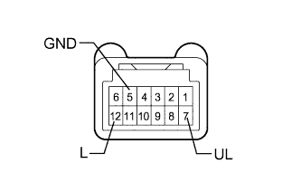

POWER DOOR LOCK CONTROL SYSTEM > All Doors LOCK/UNLOCK Functions do not Operate Via Door Control Switch |
| 1.READ VALUE USING INTELLIGENT TESTER (POWER WINDOW REGULATOR SWITCH ASSEMBLY) |
Use the Data List to check if the power window regulator switch is functioning properly (Click here).
| Tester Display | Measurement Item/Range | Normal Condition | Diagnostic Note |
| Door Lock SW-Lock | Front passenger side door control switch lock signal / ON or OFF | ON: Front passenger side door control switch pushed to lock position OFF: Front passenger side door control switch not pushed to lock position | - |
| Door Lock SW-Unlock | Front passenger side door control switch unlock signal / ON or OFF | ON: Front passenger side door control switch pushed to unlock position OFF: Front passenger side door control switch not pushed to unlock position | - |
|
| ||||
| OK | ||
| ||
| 2.INSPECT POWER WINDOW REGULATOR SWITCH ASSEMBLY |
|  |
Remove the power window regulator switch (Click here).
Measure the resistance according to the value(s) in the table below.
| Tester Connection | Switch Condition | Specified Condition |
| 12 (L) - 5 (GND) | Locked | Below 1 Ω |
| 12 (L) - 5 (GND) | Off | 10 kΩ or higher |
| 7 (UL) - 5 (GND) | Unlocked | Below 1 Ω |
| 7 (UL) - 5 (GND) | Off | 10 kΩ or higher |
|
| ||||
| OK | |
| 3.CHECK HARNESS AND CONNECTOR (POWER WINDOW REGULATOR SWITCH - MAIN BODY ECU AND BODY GROUND) |
Disconnect the J1 power window regulator switch connector.
Disconnect the G47 main body ECU connector.
Measure the resistance according to the value(s) in the table below.
| Tester Connection | Condition | Specified Condition |
| J1-7 (UL) - G47-10 (UL1) | Always | Below 1 Ω |
| J1-12 (L) - G47-9 (L1) | Always | Below 1 Ω |
| J1-5 (GND) - Body ground | Always | Below 1 Ω |
| J1-7 (UL) - Body ground | Always | 10 kΩ or higher |
| J1-12 (L) - Body ground | Always | 10 kΩ or higher |
|
| ||||
| OK | ||
| ||